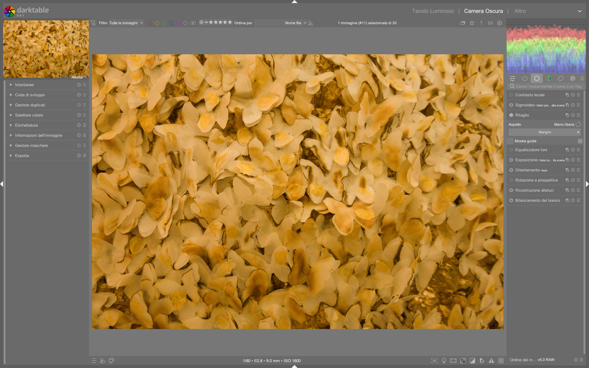

Crop¶
Il modulo crop è il modulo dedicato al ritaglio geometrico in darktable 5.4+, progettato per sostituire definitivamente il modulo obsoleto crop and rotate a partire dalla versione 3.82. È posizionato dopo i moduli di correzione geometrica (rotate and perspective) e prima di quelli di ritocco (retouch), garantendo che l’intera immagine originale rimanga disponibile per la creazione di sorgenti (source spots) nel modulo retouch17.
Posizione strategica nella pipeline
Il modulo crop è collocato nella fase finale della pipeline tecnica, subito prima dei moduli creativi (es. color balance rgb, AGX). Questo ordine permette di eseguire ritagli artistici dopo aver corretto rotazione, prospettiva e orientamento, preservando la massima flessibilità per interventi locali successivi15.
Panoramica¶
Il modulo crop gestisce esclusivamente la selezione dell’area visibile dell’immagine, senza effettuare alcuna trasformazione geometrica (rotazione, keystone, flip). Questa separazione funzionale è fondamentale per un workflow robusto:
- Correzione geometrica: eseguita con
rotate and perspective(per angoli e distorsioni prospettiche) eorientation(per capovolgimenti orizzontali/verticali)23 - Ritaglio finale: eseguito con
crop, che opera su un’immagine già geometricamente corretta1
Il modulo fornisce due modalità di controllo: - Interattiva: trascinamento diretto dei maniglioni sullo schermo - Numerica: impostazione precisa tramite slider Margins o input testuale del rapporto d’aspetto1
A differenza del vecchio crop and rotate, non offre controlli per l’angolo né per la prospettiva: tentativi di utilizzo per tali scopi genereranno risultati imprecisi o artefatti di interpolazione2.
Flusso di lavoro consigliato¶
Il flusso di lavoro ottimale per il ritaglio in darktable segue una sequenza rigorosa di tre passaggi, rispettando l’ordine della pipeline53:
flowchart TD
A["1. Ruota e prospettiva<br/>(angolo e prospettiva)"] --> B["2. Orientamento<br/>(flip H/V)"] --> C["3. Ritaglia e ruota<br/>(ritaglio artistico)"]Regola d’oro: ritaglia sempre per ultimo
Applica sempre crop dopo aver completato tutte le correzioni geometriche e tecniche. Ritagliare prima comporta la perdita di dati necessari per operazioni come retouch (che richiede aree esterne al crop per le sorgenti) o diffuse or sharpen (che beneficia di un contesto più ampio)15.
Passo 1: Imposta il rapporto d’aspetto¶
Prima di disegnare il rettangolo, definisci il rapporto d’aspetto desiderato dal menu a tendina aspect:
- Predefiniti comuni:
freehand,original image,square(1:1),golden cut(≈1.62:1)1 - Personalizzati: digita direttamente nel campo
x:y(es.13:18per una stampa 13×18 cm) o come decimale (es.0.722per 13/18 ≈ 0.722)41 - Orientamento: usa il pulsante accanto al menu per scambiare rapidamente tra portrait e landscape1
Passo 2: Disegna e regola il crop¶
Con il rapporto impostato:
- Crea il rettangolo: clicca e trascina nell’area dell’immagine
- Ridimensiona: trascina i maniglioni sui bordi o negli angoli
- Sposta: clicca e trascina all’interno del rettangolo
- Muovi su un asse: tieni premuto Ctrl (orizzontale) o Shift (verticale) mentre trascini1
Attenzione ai maniglioni laterali
In alcune versioni recenti (es. 5.5+), i maniglioni sui lati possono essere difficili da afferrare se il bordo del crop coincide con il limite dell’immagine visualizzata. In tal caso, riduci leggermente il crop con un angolo per far apparire i maniglioni laterali6.
Passo 3: Affina numericamente (opzionale)¶
Espandi la sezione Margins per controllare con precisione la percentuale di immagine tagliata da ogni lato:
- left, right, top, bottom: valori da 0.00% (nessun taglio) a 100.00% (taglio totale)1
- I valori si aggiornano automaticamente quando modifichi il crop interattivamente1
Parametri principali¶
| Parametro | Range | Default | Descrizione |
|---|---|---|---|
| aspect | freehand, original image, square, golden cut, x:y (es. 13:18) |
freehand |
Constrain the crop rectangle to a fixed width:height ratio. Custom ratios must be integers (e.g., 191:100 for 1.91:1)14 |
| left margin | 0.00% – 100.00% | 0.00% | Percentage of the image cropped from the left edge1 |
| right margin | 0.00% – 100.00% | 0.00% | Percentage of the image cropped from the right edge1 |
| top margin | 0.00% – 100.00% | 0.00% | Percentage of the image cropped from the top edge1 |
| bottom margin | 0.00% – 100.00% | 0.00% | Percentage of the image cropped from the bottom edge1 |
Guide e sovrapposizioni¶
Il modulo supporta guide visive per il composizione, attivabili con la casella show guides1:
- Tipi disponibili:
rule of thirds,golden spiral,diagonal,harmonious triangle,grid,centerline3 - Attivazione rapida: premi
Gper mostrare/nascondere le guide globalmente3 - Personalizzazione: clicca sull’icona a destra di show guides per modificare colore, opacità e tipo1
Guide per la stampa fisica
Per stampe con dimensioni esatte (es. 13×18 cm), combina il rapporto 13:18 con la guida rule of thirds: la griglia ti aiuta a posizionare elementi chiave secondo i principi compositivi standard, mantenendo il rapporto fisico richiesto4.
Gestione degli aspetti avanzati¶
Aggiunta di nuovi rapporti d’aspetto¶
Per rendere persistenti rapporti personalizzati (es. 13:18) nel menu a tendina:
1. Apri il file di configurazione $HOME/.config/darktable/darktablerc
2. Aggiungi una riga nel formato:
plugins/darkroom/clipping/extra_aspect_ratios/13x18=13:18
(il nome 13x18 appare nel menu; 13:18 è il rapporto effettivo)1
Compatibilità con il modulo Retouch¶
Il modulo crop è intenzionalmente posizionato dopo retouch nella pipeline. Ciò significa che:
- Tutte le aree fuori dal crop sono ancora accessibili come source spots per clonazione o riparazione
- Le maschere create in retouch possono estendersi oltre i bordi finali del crop12
Non usare crop per correggere la prospettiva
Il modulo crop non esegue alcuna interpolazione. Se utilizzi crop invece di rotate and perspective per “correggere” linee verticali, otterrai solo un’immagine ritagliata con linee inclinate — non rettificate. La correzione prospettica richiede l’interpolazione fornita da rotate and perspective2.
Esempio: Correzione automatica del crop dopo rotazione¶
Da darktable 3.8 What is new? (timestamp 240s)
1. Attiva il modulo rotate and perspective e applica una rotazione di +1.7° per raddrizzare l’orizzonte
2. Abilita automatic cropping → largest area per eliminare i bordi neri causati dalla rotazione
3. Verifica che il crop automatico abbia prodotto un rettangolo con margini: left = 2.3%, right = 1.9%, top = 0.0%, bottom = 0.0%
4. Passa al modulo crop: il rettangolo automatico è già visibile ed editabile
5. Regola manualmente i margini per centrare la composizione: left = 3.1%, right = 2.7%, top = 0.2%, bottom = 0.2%
6. Conferma il crop spostando il focus su un altro modulo (es. exposure)3
Esempio: Crop con guida golden spiral per ritratto¶
Da The secrets of cropping (timestamp 195s)
1. Imposta aspect su freehand
2. Attiva show guides e seleziona golden spiral
3. Allinea l’occhio destro del soggetto con il centro della spirale (posizione approssimativa: 62% dall’alto, 38% da sinistra)
4. Ridimensiona il crop finché il volto occupa circa il 65% dell’altezza totale
5. Usa i margini numerici per confermare: top = 18.2%, bottom = 16.8%, left = 22.1%, right = 22.9%
6. Disattiva le guide con G e procedi al ritocco4
Domande frequenti¶
Problema: Crop non si applica dopo aver usato rotate and perspective con automatic cropping¶
Quando rotate and perspective applica automatic cropping, genera un crop temporaneo che viene sovrascritto dal modulo crop. Il crop finale è determinato esclusivamente dal modulo crop, non da quello automatico. Se il crop sembra "sparito", verifica che il modulo crop sia abilitato e che il rettangolo sia visibile (potrebbe essere ridotto a zero margini). L’automatic cropping serve solo a prevenire bordi neri, non a sostituire il crop artistico3.
Problema: Rapporto d’aspetto personalizzato non compare nel menu aspect¶
I rapporti personalizzati devono essere definiti nel file $HOME/.config/darktable/darktablerc con sintassi esatta: plugins/darkroom/clipping/extra_aspect_ratios/NOME=x:y, dove x e y sono interi positivi (es. 191:100, non 1.91:1). Dopo la modifica, riavvia darktable. Se il nome contiene caratteri speciali o spazi, potrebbe non caricarsi1.
Problema: Il crop interattivo "salta" durante il trascinamento¶
Questo comportamento si verifica quando il cursore si muove troppo velocemente sopra i maniglioni, causando un "effetto slittamento". Soluzione: riduci la sensibilità del mouse nel sistema operativo o usa Shift durante il trascinamento per attivare il fine adjustment mode, che limita il movimento a incrementi di 0.1% per margine1.
Preset built-in del modulo crop¶
Il modulo crop include preset preconfigurati per casi d’uso comuni. Sono accessibili dal menu presets nell’intestazione del modulo1:
| Preset | Quando usarlo | Note |
|---|---|---|
original image |
Ripristino del crop precedente o reset completo | Annulla tutti i margini (left=right=top=bottom=0.00%) |
square |
Ritratti, profili social, stampe quadrate | Forza rapporto 1:1, indipendentemente dall’orientamento |
golden cut |
Composizioni classiche (paesaggi, architettura) | Rapporto fisso 1.618:1, equivalente a 1618:1000 |
freehand |
Massima libertà compositiva | Nessun vincolo, utile per correzioni di framing fine |
Riferimenti visuali¶

{kind=link}
Risorse aggiuntive¶
- darktable user manual — crop 1
- darktable user manual — (deprecated) crop and rotate 2
- YouTube — The secrets of cropping 4
- YouTube — darktable 3.8 What is new? 3
- discuss.pixls.us — Auto-crop from 'rotate and perspective' being disabled 6
- YouTube — The darktable pipeline for beginners 5
Fonti¶
-
darktable user manual - crop, https://docs.darktable.org/usermanual/development/en/module-reference/processing-modules/crop/ ↩↩↩↩↩↩↩↩↩↩↩↩↩↩↩↩↩↩↩↩↩↩↩↩
-
darktable user manual - (deprecated) crop and rotate, https://docs.darktable.org/usermanual/development/en/module-reference/processing-modules/crop-rotate/ ↩↩↩↩↩↩
-
[ENG] darktable 3.8 What is new?, https://www.youtube.com/watch?v=5smugZ5pXN0 ↩↩↩↩↩↩↩
-
[ENG] The secrets of cropping, https://www.youtube.com/watch?v=WRIzHRTA_N4 ↩↩↩↩↩
-
[ENG] The darktable pipeline for beginners, https://www.youtube.com/watch?v=1nPW6WPhhTo ↩↩↩↩
-
Auto-crop from 'rotate and perspective' being disabled, https://discuss.pixls.us/t/auto-crop-from-rotate-and-perspective-being-disabled/57031 ↩↩
-
darktable user manual - module order, https://docs.darktable.org/usermanual/development/en/module-reference/utility-modules/darkroom/module-order/ ↩